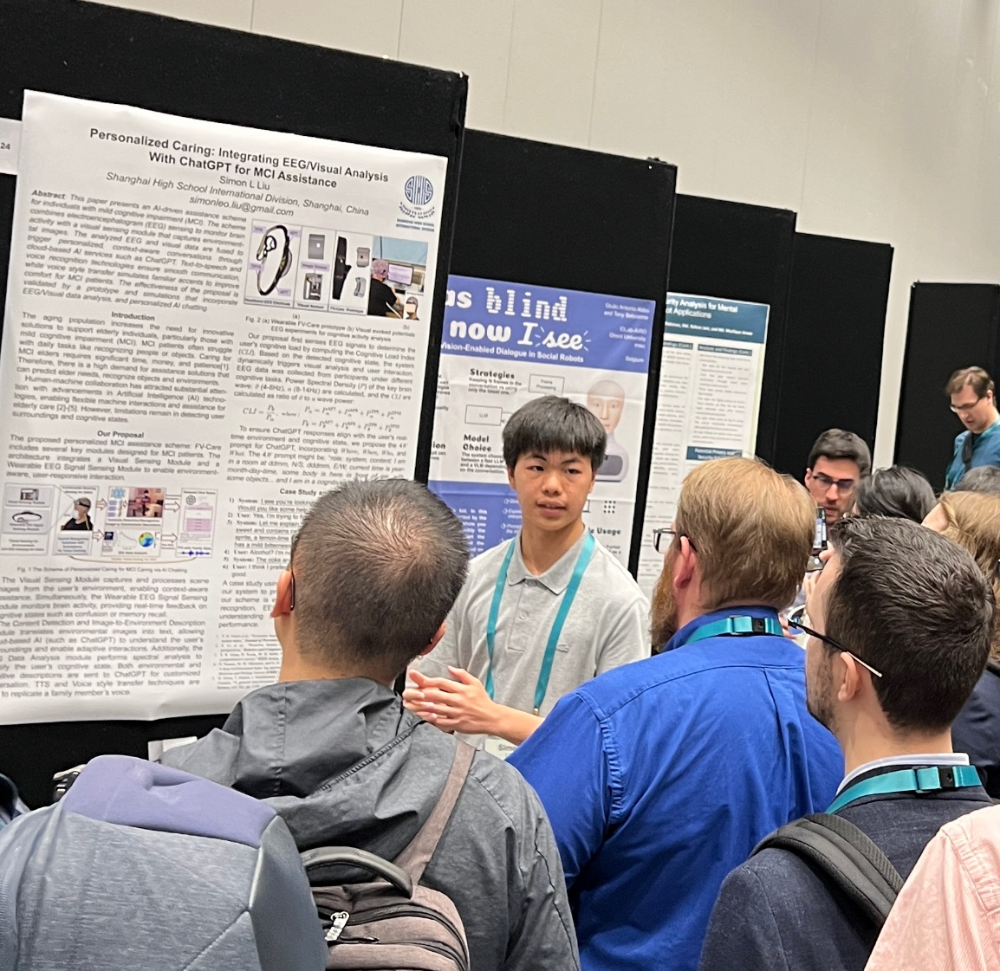

.png)
About Me
I am a high school student passionate about leveraging the intersection of health, engineering, and computer science to develop innovative solutions for healthcare challenges, particularly those affecting the elderly and individuals with cognitive impairments.
My research focuses on applying deep learning for visual analysis and EEG signal processing to create assistive technologies that enhance quality of life and promote independent living for older adults.
Connect with me on Google Scholar to explore my academic work and publications.
Publications
-
Simon L. Liu,
Personalized Caring: Integrating EEG/Visual Analysis With ChatGPT for MCI Assistance

2025 20th ACM/IEEE International Conference on Human-Robot Interaction (HRI), 2025
Research Projects
Sensing and AI Processing to Help Elder Persons
Our study leverages a fusion of AI technologies—spanning EEG analysis, visual understanding, and Large Language Models—to improve the quality of life for people with cognitive decline.
Code Repository